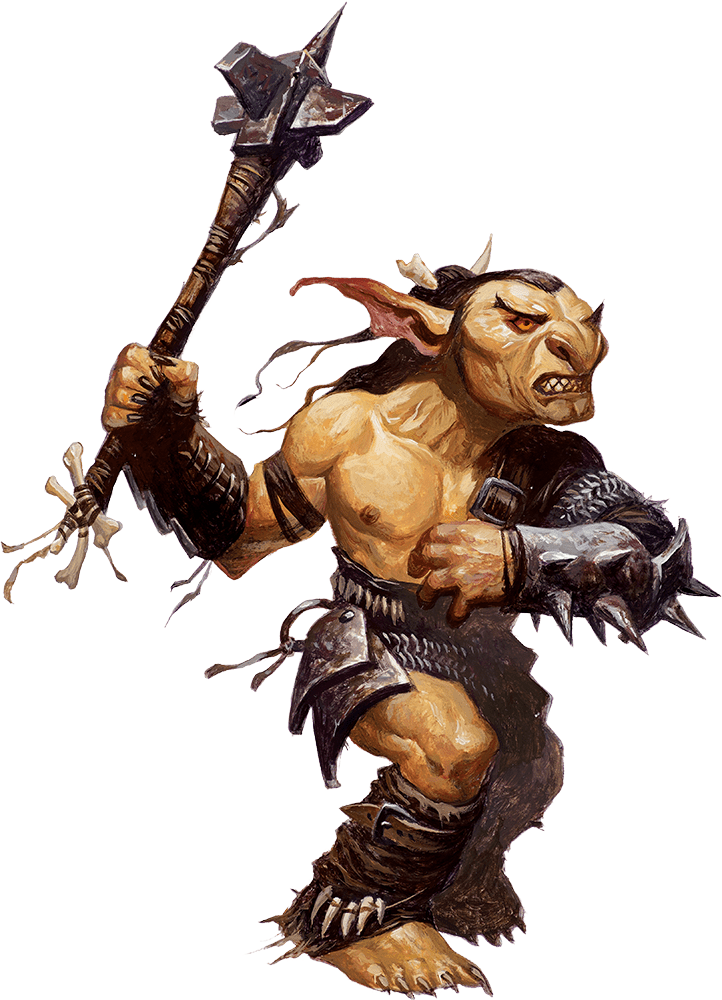

Cos'è Dungeons and Dragons?
Nato nel 1974 dalla creatività di Gary Gygax e Dave Arneson, Dungeons and Dragons (DnD) è il gioco di ruolo da tavolo più influente e riconoscibile al mondo, nonché uno dei fenomeni culturali più significativi nell'ambito dell'intrattenimento moderno. Ambientato in universi fantasy popolati da creature leggendarie, eroi, divinità, antiche civiltà e misteri da svelare, DnD invita i partecipanti a vestire i panni di personaggi immaginari e a prendere parte a storie condivise, guidate dalla fantasia e dalle decisioni dei giocatori. A differenza dei tradizionali giochi da tavolo, non esiste un percorso prestabilito né un unico modo per raggiungere la vittoria: ogni avventura si sviluppa attraverso il dialogo, l'interpretazione, la strategia e il lancio dei dadi, sotto la guida di un Dungeon Master, figura incaricata di descrivere il mondo, interpretare i personaggi secondari e gestire le conseguenze delle azioni del gruppo. Nel corso dei decenni, DnD ha superato i confini del semplice passatempo, influenzando profondamente la letteratura fantasy, i videogiochi, il cinema e la cultura popolare. La sua capacità di unire narrazione collaborativa, libertà creativa e interazione sociale lo ha trasformato in una comunità internazionale, capace di coinvolgere generazioni diverse e di rinnovarsi costantemente attraverso nuove ambientazioni, edizioni e strumenti digitali. In definitiva, Dungeons and Dragons non è soltanto un gioco di ruolo: è uno spazio condiviso in cui l'immaginazione diventa esperienza e ogni gruppo di giocatori ha la possibilità di scrivere una storia irripetibile.
Per saperne di più sulle origini del gioco, clicca il banner qui sotto!
Se invece vuoi conoscere fattacci e curiosità sulle ispirazioni del gioco, PESTA QUESTO CATTIVONE COL MOUSE!

In alternativa, ecco un video super esaustivo in lingua inglese prodotto dai talentuosi ragazzi della "DM it All" sulla storia completa di Dungeons and Dragons